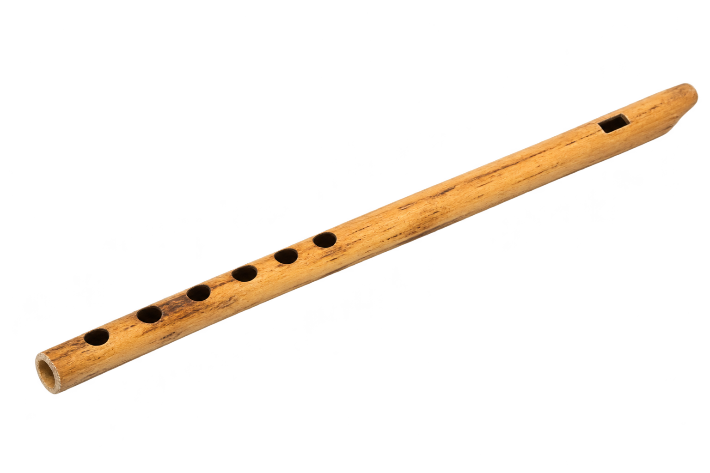

¿Qué es?
Instrumento de viento con seis agujeros en la parte superior y uno posterior.
Evaluación final
Comprueba lo que aprendiste sobre la flauta de carrizo y el tambor tradicional.
Completa las siguientes actividades.
Actividad 1 de 4